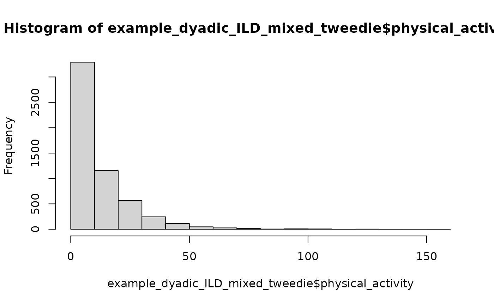

APIMs with Mixed Dyad Compositions
mixed-apim.RmdThis vignette covers APIMs that combine distinguishable and exchangeable dyad compositions in one analysis. It assumes familiarity with the data-preparation workflow in the Getting Started vignette and with the single-composition models in the Actor-Partner Interdependence Model vignette. For the alternative DIM parameterization of exchangeable dyads, see the Dyad-Individual Model vignette. For undirected dyadic score outcomes, see the Dyadic Score Model vignette.
This vignette is under construction and for now only contains a few preliminary example models. Please check back soon!
Cross-sectional mixed-dyads APIM
The data were simulated with the following fixed effects and residual
covariance parameters. For exchangeable dyads, sum_variance
and diff_variance imply the partner correlation.
#> block parameter value
#> 1 female_x_male female_mean 5.50000
#> 2 female_x_male male_mean 4.50000
#> 3 female_x_male correlation -0.30000
#> 4 female_x_female mean 5.80000
#> 5 female_x_female sum_variance 0.67500
#> 6 female_x_female diff_variance 0.32500
#> 7 male_x_male mean 4.20000
#> 8 male_x_male sum_variance 0.63375
#> 9 male_x_male diff_variance 1.05625Let’s see if we can recover those parameters.
We first prepare the data with prepare_interdep_data. It
automatically finds all dyad compositions.
mixed_cross_data <- prepare_interdep_data(
example_dyadic_crosssectional_mixed,
group = coupleID,
member = personID,
role = gender,
seed = 123
)
print(mixed_cross_data, n = 4)
#> # interdep data
#> # Rows: 640 | Dyads: 320 | Intensive longitudinal: no
#> # Structure: group = coupleID, member = personID, role = gender
#> #
#> # Dyad compositions:
#> # female_x_female exchangeable 100 dyads
#> # female_x_male distinguishable 120 dyads
#> # male_x_male exchangeable 100 dyads
#> #
#> # Added columns:
#> # .i_composition inferred dyad composition
#> # .i_composition_role composition-specific member role
#> # .i_is_{comp-role} composition-role indicator columns
#> # .i_diff_{comp} composition-specific sum-diff contrasts with arbitrary
#> # direction; 0 for distinguishable dyads or other
#> # exchangeable compositions
#> #
#> # A tibble: 640 × 12
#> personID coupleID gender satisfaction .i_composition .i_composition_role
#> <int> <int> <fct> <dbl> <fct> <fct>
#> 1 1 1 female 4.95 female_x_male female_x_male_female
#> 2 2 1 male 5.26 female_x_male female_x_male_male
#> 3 3 2 female 5.14 female_x_male female_x_male_female
#> 4 4 2 male 3.11 female_x_male female_x_male_male
#> # ℹ 636 more rows
#> # ℹ 6 more variables: .i_is_female_x_female <dbl>,
#> # .i_is_female_x_male_female <dbl>, .i_is_female_x_male_male <dbl>,
#> # .i_is_male_x_male <dbl>, .i_diff_female_x_female_arbitrary <dbl>,
#> # .i_diff_male_x_male_arbitrary <dbl>We basically simply estimate a separate distinguishable or exchangeable APIM per dyad composition. The tricky part is the random effects setup.
.i_diff variables need to be structured as containing -1 and 1 for
the corresponding composition, and 0 for each other composition.
prepare_interdep_data does this automatically. Then, the
following model can be specified:
mixed_cross_gaussian_model <- glmmTMB(
satisfaction ~ 0 +
.i_is_female_x_male_female + .i_is_female_x_male_male +
.i_is_female_x_female + .i_is_male_x_male +
# distinguishable female-male residual covariance
us(0 + .i_is_female_x_male_female + .i_is_female_x_male_male | coupleID) +
# exchangeable female-female residual covariance via sum-diff
(0 + .i_is_female_x_female | coupleID) +
(0 + .i_diff_female_x_female_arbitrary | coupleID) +
# exchangeable male-male residual covariance via sum-diff
(0 + .i_is_male_x_male | coupleID) +
(0 + .i_diff_male_x_male_arbitrary | coupleID)
, dispformula = ~ 0
, family = gaussian()
, data = mixed_cross_data
)
summary(mixed_cross_gaussian_model)Single versus separate mixed-composition fits
The mixed-composition models in this vignette fit all dyad compositions in one model call. That is useful when the goal is to compare effects across compositions, test equality constraints, keep one model-based covariance matrix for those comparisons, or intentionally share parameters such as a common Tweedie power parameter.
A fixed-effect formula with all compositions in one model call does not, by itself, create partial pooling across dyad compositions. The composition-specific intercepts and slopes above are ordinary fixed effects, so estimates for female-female or male-male dyads are not automatically shrunk toward estimates from the other dyad types. If every mean, variance, and covariance parameter is composition-specific, the likelihood largely factorizes by composition. In the cross-sectional Gaussian example, the single mixed-composition fit and three separate composition-specific fits give the same log-likelihood and fixed-effect estimates up to numerical tolerance.
Partial pooling requires a different model specification, such as a common effect plus composition deviations with a hierarchical prior, or a random dyad-type effect. With only a few dyad types, frequentist random dyad-type variance components are usually weakly identified. Complete pooling, where a slope is constrained to be identical across compositions, can be more stable and more powerful when the constraint is substantively correct, but it is biased when the dyad compositions truly differ.
Mixed-composition intensive longitudinal Gaussian model
example_dyadic_ILD_mixed contains the same three dyad
compositions as the mixed-composition cross-sectional example, but each
dyad contributes repeated paired observations over
diaryday.
To prepare the data:
mixed_ild_data <- prepare_interdep_data(
example_dyadic_ILD_mixed,
group = coupleID,
member = personID,
role = gender,
time = diaryday,
predictors = provided_support,
seed = 123
)
print(mixed_ild_data)
#> # interdep data
#> # Rows: 5600 | Dyads: 200 | Intensive longitudinal: yes
#> # Structure: group = coupleID, member = personID, role = gender, time =
#> # diaryday
#> #
#> # Dyad compositions:
#> # female_x_female exchangeable 60 dyads
#> # female_x_male distinguishable 80 dyads
#> # male_x_male exchangeable 60 dyads
#> #
#> # Added columns:
#> # .i_composition inferred dyad composition
#> # .i_composition_role composition-specific member role
#> # .i_is_{comp-role} composition-role indicator columns
#> # .i_diff_{comp} composition-specific sum-diff contrasts with
#> # arbitrary direction; 0 for distinguishable dyads or
#> # other exchangeable compositions
#> # .i_{pred}_cwp within-person predictor: momentary deviations from
#> # each person's usual level
#> # .i_{pred}_cbp between-person predictor: stable differences from
#> # the average person's usual level
#> # .i_{pred}_cwp_actor APIM within-person actor predictor: actor's
#> # momentary deviations from their usual level
#> # .i_{pred}_cwp_partner APIM within-person partner predictor: partner's
#> # momentary deviations from their usual level
#> # .i_{pred}_cbp_actor APIM between-person actor predictor: actor's stable
#> # difference from the average person's usual level
#> # .i_{pred}_cbp_partner APIM between-person partner predictor: partner's
#> # stable difference from the average person's usual
#> # level
#> #
#> # A tibble: 5,600 × 20
#> personID coupleID diaryday gender closeness provided_support .i_composition
#> <int> <int> <int> <fct> <dbl> <dbl> <fct>
#> 1 1 1 0 female 3.79 4.85 female_x_male
#> 2 1 1 1 female 2.89 4.13 female_x_male
#> 3 1 1 2 female 4.20 4.62 female_x_male
#> 4 1 1 3 female 5.79 5.09 female_x_male
#> 5 1 1 4 female 3.97 4.92 female_x_male
#> 6 1 1 5 female 3.53 4.51 female_x_male
#> 7 1 1 6 female 4.38 5.09 female_x_male
#> 8 1 1 7 female 3.51 4.92 female_x_male
#> 9 1 1 8 female 4.45 4.11 female_x_male
#> 10 1 1 9 female 3.17 4.01 female_x_male
#> # ℹ 5,590 more rows
#> # ℹ 13 more variables: .i_composition_role <fct>, .i_is_female_x_female <dbl>,
#> # .i_is_female_x_male_female <dbl>, .i_is_female_x_male_male <dbl>,
#> # .i_is_male_x_male <dbl>, .i_diff_female_x_female_arbitrary <dbl>,
#> # .i_diff_male_x_male_arbitrary <dbl>, .i_provided_support_cwp <dbl>,
#> # .i_provided_support_cbp <dbl>, .i_provided_support_cwp_actor <dbl>,
#> # .i_provided_support_cwp_partner <dbl>, …This first mixed-composition ILD model includes composition-specific intercepts, fixed time slopes, and within-person and between-person actor and partner effects. Random time slopes are omitted; with separate stable and same-day dyadic covariance blocks, random time slopes add many weakly identified parameters and are a likely first source of convergence problems.
This maximal covariance model is a demanding all-in-one likelihood. In this simulated example, separate composition-specific fits recover the same fixed-effect solution cleanly, while the all-in-one mixed-composition fit can report false convergence even when it reaches the same likelihood and has a positive definite Hessian. Treat convergence diagnostics, Hessian diagnostics, and comparison with simpler or separate fits as part of the workflow. If the all-in-one fit is not clean, fit the composition-specific models separately for estimation, or simplify the same-day and stable covariance blocks before adding more random effects.
mixed_ild_gaussian_model <- glmmTMB(
closeness ~ 0 +
# Composition-specific intercepts
.i_is_female_x_male_female + .i_is_female_x_male_male +
.i_is_female_x_female +
.i_is_male_x_male +
# Composition-specific time trends
.i_is_female_x_male_female:diaryday +
.i_is_female_x_male_male:diaryday +
.i_is_female_x_female:diaryday +
.i_is_male_x_male:diaryday +
# Composition-specific within-person actor effects
.i_is_female_x_male_female:.i_provided_support_cwp_actor +
.i_is_female_x_male_male:.i_provided_support_cwp_actor +
.i_is_female_x_female:.i_provided_support_cwp_actor +
.i_is_male_x_male:.i_provided_support_cwp_actor +
# Composition-specific within-person partner effects
.i_is_female_x_male_female:.i_provided_support_cwp_partner +
.i_is_female_x_male_male:.i_provided_support_cwp_partner +
.i_is_female_x_female:.i_provided_support_cwp_partner +
.i_is_male_x_male:.i_provided_support_cwp_partner +
# Composition-specific between-person actor effects
.i_is_female_x_male_female:.i_provided_support_cbp_actor +
.i_is_female_x_male_male:.i_provided_support_cbp_actor +
.i_is_female_x_female:.i_provided_support_cbp_actor +
.i_is_male_x_male:.i_provided_support_cbp_actor +
# Composition-specific between-person partner effects
.i_is_female_x_male_female:.i_provided_support_cbp_partner +
.i_is_female_x_male_male:.i_provided_support_cbp_partner +
.i_is_female_x_female:.i_provided_support_cbp_partner +
.i_is_male_x_male:.i_provided_support_cbp_partner +
# stable dyad-level covariance
us(0 + .i_is_female_x_male_female + .i_is_female_x_male_male | coupleID) +
(0 + .i_is_female_x_female | coupleID) +
(0 + .i_diff_female_x_female_arbitrary | coupleID) +
(0 + .i_is_male_x_male | coupleID) +
(0 + .i_diff_male_x_male_arbitrary | coupleID) +
# same-day covariance
us(0 + .i_is_female_x_male_female + .i_is_female_x_male_male | coupleID:diaryday) +
(0 + .i_is_female_x_female | coupleID:diaryday) +
(0 + .i_diff_female_x_female_arbitrary | coupleID:diaryday) +
(0 + .i_is_male_x_male | coupleID:diaryday) +
(0 + .i_diff_male_x_male_arbitrary | coupleID:diaryday)
, dispformula = ~ 0
, family = gaussian()
, data = mixed_ild_data
)
summary(mixed_ild_gaussian_model)Mixed-composition intensive longitudinal Tweedie model
example_dyadic_ILD_mixed_tweedie has the same
mixed-composition intensive longitudinal dyadic structure, but the
outcome is semi-continuous.
print(head(example_dyadic_ILD_mixed_tweedie, n = 26), n = 26)
#> # A tibble: 26 × 6
#> personID coupleID diaryday gender physical_activity provided_support
#> <int> <int> <int> <fct> <dbl> <dbl>
#> 1 1 1 0 female 11.4 3.92
#> 2 1 1 1 female 2.24 3.86
#> 3 1 1 2 female 8.14 4.15
#> 4 1 1 3 female 4.48 3.55
#> 5 1 1 4 female 2.39 4.13
#> 6 1 1 5 female 10.1 3.50
#> 7 1 1 6 female 4.95 4.29
#> 8 1 1 7 female NA NA
#> 9 1 1 8 female 0 4.06
#> 10 1 1 9 female 5.59 4.41
#> 11 1 1 10 female 4.99 3.61
#> 12 1 1 11 female 10.7 4.12
#> 13 1 1 12 female 2.10 3.62
#> 14 1 1 13 female 3.98 5.06
#> 15 2 1 0 male 39.4 4.40
#> 16 2 1 1 male 33.7 5.16
#> 17 2 1 2 male 2.24 4.69
#> 18 2 1 3 male 3.46 3.69
#> 19 2 1 4 male 17.6 5.20
#> 20 2 1 5 male 14.7 5.34
#> 21 2 1 6 male 6.25 6.36
#> 22 2 1 7 male 13.3 6.95
#> 23 2 1 8 male 20.9 5.38
#> 24 2 1 9 male 8.64 5.64
#> 25 2 1 10 male 0 4.54
#> 26 2 1 11 male 20.6 5.03
hist(example_dyadic_ILD_mixed_tweedie$physical_activity, breaks = 20)
mixed_ild_tweedie_data <- prepare_interdep_data(
example_dyadic_ILD_mixed_tweedie,
group = coupleID,
member = personID,
role = gender,
time = diaryday,
predictors = provided_support,
seed = 123
)
print(mixed_ild_tweedie_data)
#> # interdep data
#> # Rows: 5600 | Dyads: 200 | Intensive longitudinal: yes
#> # Structure: group = coupleID, member = personID, role = gender, time =
#> # diaryday
#> #
#> # Dyad compositions:
#> # female_x_female exchangeable 60 dyads
#> # female_x_male distinguishable 80 dyads
#> # male_x_male exchangeable 60 dyads
#> #
#> # Added columns:
#> # .i_composition inferred dyad composition
#> # .i_composition_role composition-specific member role
#> # .i_is_{comp-role} composition-role indicator columns
#> # .i_diff_{comp} composition-specific sum-diff contrasts with
#> # arbitrary direction; 0 for distinguishable dyads or
#> # other exchangeable compositions
#> # .i_{pred}_cwp within-person predictor: momentary deviations from
#> # each person's usual level
#> # .i_{pred}_cbp between-person predictor: stable differences from
#> # the average person's usual level
#> # .i_{pred}_cwp_actor APIM within-person actor predictor: actor's
#> # momentary deviations from their usual level
#> # .i_{pred}_cwp_partner APIM within-person partner predictor: partner's
#> # momentary deviations from their usual level
#> # .i_{pred}_cbp_actor APIM between-person actor predictor: actor's stable
#> # difference from the average person's usual level
#> # .i_{pred}_cbp_partner APIM between-person partner predictor: partner's
#> # stable difference from the average person's usual
#> # level
#> #
#> # A tibble: 5,600 × 20
#> personID coupleID diaryday gender physical_activity provided_support
#> <int> <int> <int> <fct> <dbl> <dbl>
#> 1 1 1 0 female 11.4 3.92
#> 2 1 1 1 female 2.24 3.86
#> 3 1 1 2 female 8.14 4.15
#> 4 1 1 3 female 4.48 3.55
#> 5 1 1 4 female 2.39 4.13
#> 6 1 1 5 female 10.1 3.50
#> 7 1 1 6 female 4.95 4.29
#> 8 1 1 7 female NA NA
#> 9 1 1 8 female 0 4.06
#> 10 1 1 9 female 5.59 4.41
#> # ℹ 5,590 more rows
#> # ℹ 14 more variables: .i_composition <fct>, .i_composition_role <fct>,
#> # .i_is_female_x_female <dbl>, .i_is_female_x_male_female <dbl>,
#> # .i_is_female_x_male_male <dbl>, .i_is_male_x_male <dbl>,
#> # .i_diff_female_x_female_arbitrary <dbl>,
#> # .i_diff_male_x_male_arbitrary <dbl>, .i_provided_support_cwp <dbl>,
#> # .i_provided_support_cbp <dbl>, .i_provided_support_cwp_actor <dbl>, …
summary(mixed_ild_tweedie_data)
#> personID coupleID diaryday gender
#> Min. : 1.0 Min. : 1.00 Min. : 0.0 female:2800
#> 1st Qu.:100.8 1st Qu.: 50.75 1st Qu.: 3.0 male :2800
#> Median :200.5 Median :100.50 Median : 6.5
#> Mean :200.5 Mean :100.50 Mean : 6.5
#> 3rd Qu.:300.2 3rd Qu.:150.25 3rd Qu.:10.0
#> Max. :400.0 Max. :200.00 Max. :13.0
#>
#> physical_activity provided_support .i_composition
#> Min. : 0.000 Min. :-0.009341 female_x_female:1680
#> 1st Qu.: 1.725 1st Qu.: 4.028752 female_x_male :2240
#> Median : 6.974 Median : 4.836293 male_x_male :1680
#> Mean : 11.366 Mean : 4.821283
#> 3rd Qu.: 16.163 3rd Qu.: 5.611992
#> Max. :158.087 Max. : 8.401539
#> NAs :120 NAs :220
#> .i_composition_role .i_is_female_x_female .i_is_female_x_male_female
#> female_x_female :1680 Min. :0.0 Min. :0.0
#> female_x_male_female:1120 1st Qu.:0.0 1st Qu.:0.0
#> female_x_male_male :1120 Median :0.0 Median :0.0
#> male_x_male :1680 Mean :0.3 Mean :0.2
#> 3rd Qu.:1.0 3rd Qu.:0.0
#> Max. :1.0 Max. :1.0
#>
#> .i_is_female_x_male_male .i_is_male_x_male .i_diff_female_x_female_arbitrary
#> Min. :0.0 Min. :0.0 Min. :-1
#> 1st Qu.:0.0 1st Qu.:0.0 1st Qu.: 0
#> Median :0.0 Median :0.0 Median : 0
#> Mean :0.2 Mean :0.3 Mean : 0
#> 3rd Qu.:0.0 3rd Qu.:1.0 3rd Qu.: 0
#> Max. :1.0 Max. :1.0 Max. : 1
#>
#> .i_diff_male_x_male_arbitrary .i_provided_support_cwp .i_provided_support_cbp
#> Min. :-1 Min. :-2.488131 Min. :-2.6707037
#> 1st Qu.: 0 1st Qu.:-0.507787 1st Qu.:-0.6189091
#> Median : 0 Median :-0.002168 Median : 0.0002432
#> Mean : 0 Mean : 0.000000 Mean : 0.0000000
#> 3rd Qu.: 0 3rd Qu.: 0.502352 3rd Qu.: 0.6169207
#> Max. : 1 Max. : 2.764062 Max. : 2.1738733
#> NAs :220
#> .i_provided_support_cwp_actor .i_provided_support_cwp_partner
#> Min. :-2.488131 Min. :-2.488131
#> 1st Qu.:-0.507787 1st Qu.:-0.507787
#> Median :-0.002168 Median :-0.002168
#> Mean : 0.000000 Mean : 0.000000
#> 3rd Qu.: 0.502352 3rd Qu.: 0.502352
#> Max. : 2.764062 Max. : 2.764062
#> NAs :220 NAs :220
#> .i_provided_support_cbp_actor .i_provided_support_cbp_partner
#> Min. :-2.6707037 Min. :-2.6707037
#> 1st Qu.:-0.6189091 1st Qu.:-0.6189091
#> Median : 0.0002432 Median : 0.0002432
#> Mean : 0.0000000 Mean : 0.0000000
#> 3rd Qu.: 0.6169207 3rd Qu.: 0.6169207
#> Max. : 2.1738733 Max. : 2.1738733
#> As in the Gaussian mixed-composition ILD model, the mean model contains composition-specific intercepts, fixed time slopes, and within-person and between-person actor and partner effects. The dyadic random-effect blocks are latent effects on the log-mean scale, not residual covariance parameters in the Gaussian sense. This is the most fragile example in the vignette because it combines composition-specific mean effects, composition-specific latent dyadic dependence, composition-specific dispersion, and a common Tweedie power parameter. A practical workflow is to fit separate Gaussian or simpler Tweedie models first, then add shared-parameter constraints only when they answer a specific comparison question.
mixed_ild_tweedie_model <- glmmTMB(
physical_activity ~ 0 +
# Intercepts for each composition_role
.i_is_female_x_male_female +
.i_is_female_x_male_male +
.i_is_female_x_female +
.i_is_male_x_male +
# C-specific specific time trends
.i_is_female_x_male_female:diaryday +
.i_is_female_x_male_male:diaryday +
.i_is_female_x_female:diaryday +
.i_is_male_x_male:diaryday +
# Composition-specific within-person actor effects
.i_is_female_x_male_female:.i_provided_support_cwp_actor +
.i_is_female_x_male_male:.i_provided_support_cwp_actor +
.i_is_female_x_female:.i_provided_support_cwp_actor +
.i_is_male_x_male:.i_provided_support_cwp_actor +
# Composition-specific within-person partner effects
.i_is_female_x_male_female:.i_provided_support_cwp_partner +
.i_is_female_x_male_male:.i_provided_support_cwp_partner +
.i_is_female_x_female:.i_provided_support_cwp_partner +
.i_is_male_x_male:.i_provided_support_cwp_partner +
# Composition-specific between-person actor effects
.i_is_female_x_male_female:.i_provided_support_cbp_actor +
.i_is_female_x_male_male:.i_provided_support_cbp_actor +
.i_is_female_x_female:.i_provided_support_cbp_actor +
.i_is_male_x_male:.i_provided_support_cbp_actor +
# Composition-specific between-person partner effects
.i_is_female_x_male_female:.i_provided_support_cbp_partner +
.i_is_female_x_male_male:.i_provided_support_cbp_partner +
.i_is_female_x_female:.i_provided_support_cbp_partner +
.i_is_male_x_male:.i_provided_support_cbp_partner +
# stable dyad-level latent covariance
(0 + .i_is_female_x_male_female + .i_is_female_x_male_male | coupleID) +
(0 + .i_is_female_x_female | coupleID) +
(0 + .i_diff_female_x_female_arbitrary | coupleID) +
(0 + .i_is_male_x_male | coupleID) +
(0 + .i_diff_male_x_male_arbitrary | coupleID) +
# same-day latent covariance
(0 + .i_is_female_x_male_female + .i_is_female_x_male_male | coupleID:diaryday) +
(0 + .i_is_female_x_female | coupleID:diaryday) +
(0 + .i_diff_female_x_female_arbitrary | coupleID:diaryday) +
(0 + .i_is_male_x_male | coupleID:diaryday) +
(0 + .i_diff_male_x_male_arbitrary | coupleID:diaryday)
# recommended first simplification in convergence issues is to set dispfomula = ~ 1
, dispformula = ~ 0 +
.i_is_female_x_male_female + .i_is_female_x_male_male +
.i_is_female_x_female + .i_is_male_x_male
, family = tweedie()
, data = mixed_ild_tweedie_data
)
summary(mixed_ild_tweedie_model)For single-composition APIMs, return to the Actor-Partner Interdependence Model vignette. For the main data-preparation workflow, see the Getting Started vignette. For the DIM parameterization of exchangeable dyads, see the Dyad-Individual Model vignette, or continue to the Dyadic Score Model vignette.
For an in-depth tutorial covering data preparation, model fitting,
diagnostics, and assumption checks, see Distinguishable
and Exchangeable Dyads: Bayesian Multilevel Modelling. It uses
interdep for cross-sectional and intensive longitudinal
APIM and DIM workflows, with models fitted primarily using
brms (source,
DOI).